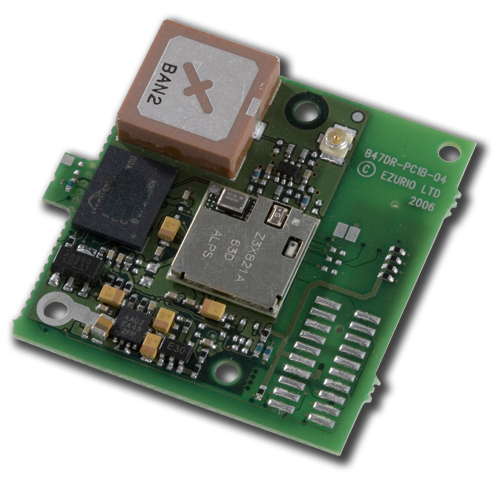
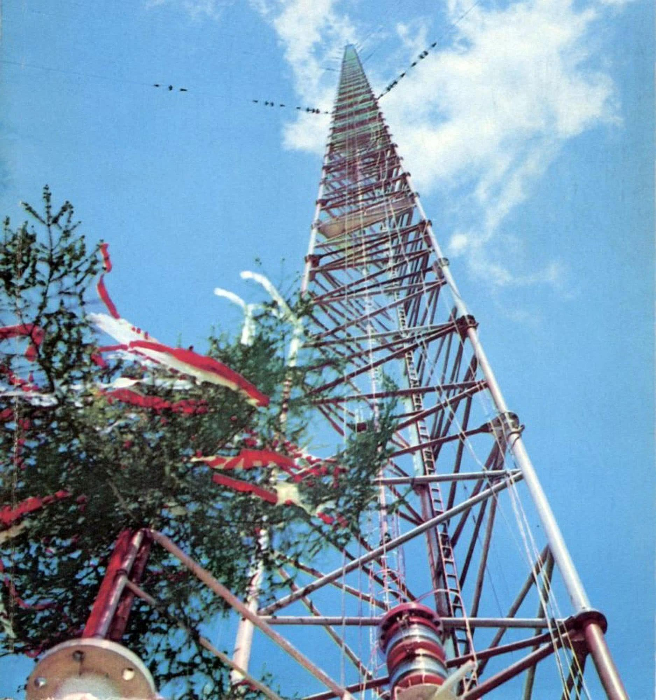

🎥 Explanatory Media
📖 What is a Wi-Fi Adapter?
WiFi adapters translate radio waves into data. They come as internal PCIe cards, M.2 modules in laptops, or portable USB dongles.
Wi-Fi 6E adds the 6 GHz band — a completely new, less congested spectrum. In a crowded apartment building, switching from Wi-Fi 5 to Wi-Fi 6E can cut latency by 75%.
🆚 USB vs PCIe Wi-Fi Adapters
| Type | Speed | Stability | Setup | Best For |
|---|---|---|---|---|
| USB Nano (Wi-Fi 5) | 150–433 Mbps | Poor | Plug & Play | Temporary / Travel |
| USB Dual-Band (Wi-Fi 6) | 600–1800 Mbps | Moderate | Plug & Play | Casual desktop use |
| PCIe (Wi-Fi 6) | Up to 3000 Mbps | Excellent | Internal card | Desktop gaming / work |
| PCIe (Wi-Fi 6E) | Up to 9600 Mbps | Excellent | Internal card | Future-proof desktop |
🛒 Top Wi-Fi Adapter Products

TP-Link Archer TXE75E Wi-Fi 6E
PCIe · Wi-Fi 6E · AXE5400 · Bluetooth 5.2 · 2×Antenna · Best PCIe pick
₹3,825 – ₹5,175 (Avg: ₹4,500)
🛒 Amazon India
TP-Link Archer T3U Plus USB
USB 3.0 · AC1300 (Wi-Fi 5) · Dual-band · High-gain antenna · Budget pick
₹1,025 – ₹1,375 (Avg: ₹1,200)
🛒 Flipkart🔗 Related Components
🔬 Deep Dive & Research Resources
To elevate your understanding of Wifi Adapter to an academic and engineering level, explore the curated resources below. These materials cover the fundamental physics, architectural evolution, and advanced implementation details required for independent research.
📚 Academic & Technical Reading
🎥 Video Lecture / Demonstration
📜 History
WiFi (802.11) launched in 1997 with 2Mbps speeds. It has evolved through 802.11n (WiFi 4), ac (WiFi 5), ax (WiFi 6/6E), and now be (WiFi 7).
🏗️ Architecture
Includes a radio transceiver, an antenna system (MIMO), and a baseband processor.
🖼️ Visual Gallery



